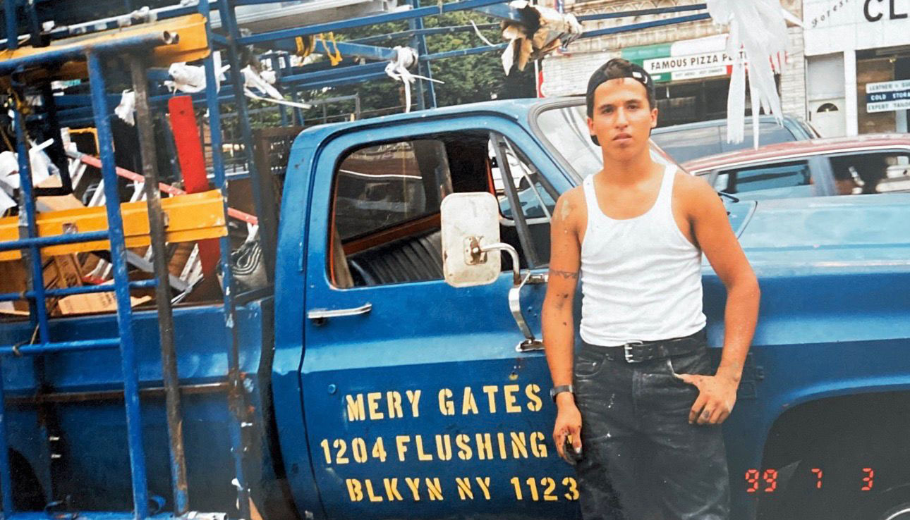
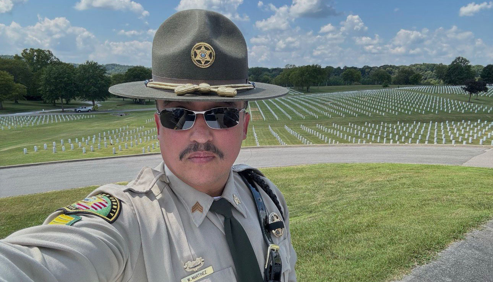
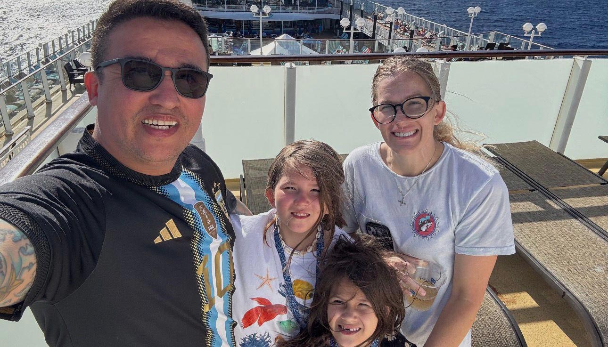
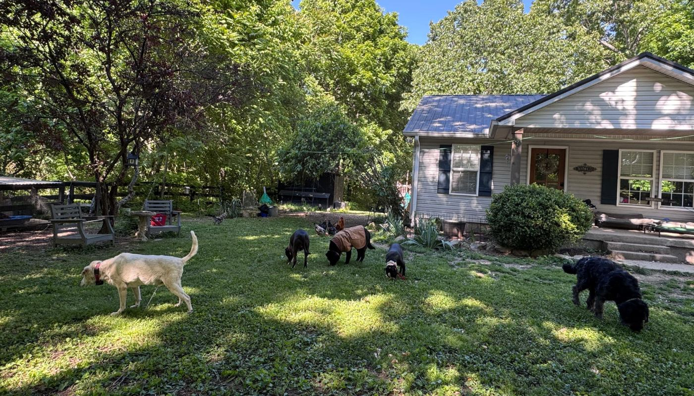

"Me fui de la Argentina el 19 de abril de 1999, con apenas 20 años. La situación bajo la presidencia de Menem era insoportable. En ese entonces trabajaba en la fábrica de hielo de Osvaldo Pallotta; la plata no alcanzaba, aunque él siempre me bancó."

Los principales desafíos se basaron en lograr entender y hacerse entender en un entorno completamente nuevo y diferente. En los primeros años, sin tecnología, mantener una relación con su hogar era una tarea triste y solitaria.
"Tenía que comprar una tarjeta de teléfono de $10.00 dólares mientras lavaba ropa y se llora y sufre mucho."
La imagen captura el momento en el que Williams dos de las condecoraciones más respetadas de la nación: un Corazón Púrpura, otorgado por heridas recibidas e combate, y una Estrella de Bronce con el distintivo "V" por valor, por acciones heroicas en el campo de batalla de Afganistán.
Las nuevas tecnologías fueron un punto clave para darle un giro a los sentimientos. Ahora podemos utilizar herramientas como Facebook e Instagram para mantenernos informados sobre la situación del país a miles de kilómetros.
Williams afirma que quienes se van del país quedan en el pasado y en la memoria de nuestros familiares y amigos ya que cada cual sigue con su vida.
Y con el paso del tiempo, quienes se fueron, quedan olvidados.
Gracias a sus servicios militares Williams recibió una jubilación y un pago por sus estudios. Tuvo la posibilidad de poder formarse con un idioma y una cultura totalmente distinta a la de sus primeros estudios en Argentina.
El argentino pudo desarrollar una carrera como sheriff en la cual subió de rango 4 veces en 4 años, hasta que decidió renunciar cuando la ley migratoria para arrestar indocumentados cambió. Demostrando así, que sus valores no cambiaron.

Hoy Williams lidera una familia que, aunque no habla español, mantiene un profundo afecto y adoración por la Argentina. Demostrando que el vínculo con el origen persiste a pesar de los kilómetros y los años.

Para Williams emigrar implica una pérdida que las redes sociales no siempre muestran. Advierte que la distancia es dolorosa, especialmente cuando los familiares mueren o en las fiestas tradicionales de fin de año.
El argentino sube contenido en redes pero aclara que no lo hace con necesidad de alardear sobre su vida, sino para mostrar como su vida cambió radicalmente. Pasando de ser "nadie", a construir una carrera de servicio en otro país.
Desmiente la idea de que vivir afuera te garantiza ser millonario, explica que así como ganas dinero, lo gastas. Y el mayor costo es no poder disfrutas los logros con tu gente y eso hace mal.
